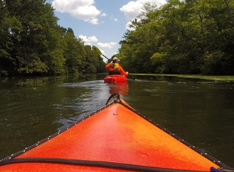
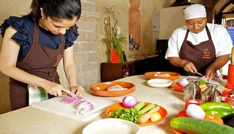

After graduating from OTC, I am planning on taking blockchain courses at MIT.
I hope to become a Smart Contract Engineer in the Crypto Currency industry.
I desire to work for a large company dealing with buyers and sellers, as well as creating new applications.
My Biggest Hobby is Art
I started drawing at a young age and never stopped. I experiment with many different mediums, pen and ink being my favorite.

My Family Hobby is Kayaking
My Family and I began kayaking two years ago. We spend every summer kayaking together.

My Newest Hobby is Cooking
I just recently fell in love with cooking. I find it to be a different form of art I enjoy.